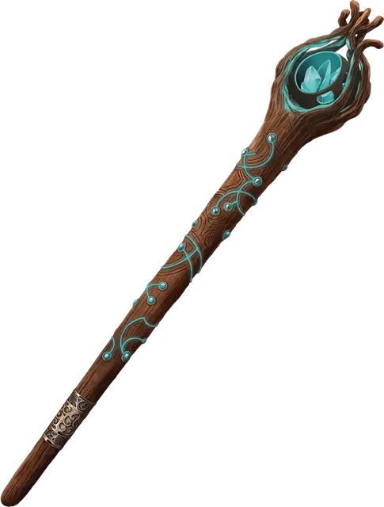

Посох Туда-Сюда
Hither-Thither Staff
Посох, легендарный

Рекомендованная стоимость от 50 001 зм
В верхнюю часть этой трости инкрустирован сверкающий самоцвет. В посохе 4 заряда, и посох восстанавливает 1к4 зарядов на каждом рассвете.
Действием вы можете потратить заряд посоха и создать два связанных друг с другом портала телепортации. Каждый должен быть расположен на видимых вами плоских поверхностях по вашему выбору в пределах 1500 футов от вас. Или же вы можете действием потратить 1 заряд, чтобы переместить один или оба портала, соблюдая те же условия. Поверхность, на которой создаётся портал, должна быть достаточного размера, чтобы вместить его. Оба портала — двумерные, светящиеся овалы, образующие открытый проход до 6 футов высотой и 4 футов шириной. Любое существо или предмет, попадающее в один из порталов, выходит из второго, как если бы оба создавали проход между соответствующими точками.
Портал может быть создан на движущейся поверхности, но эффект завершается, как только порталы находятся более чем в 1 миле друг от друга. Держа посох, вы можете бонусным действием закрыть оба портала (завершая эффект) или подавить один из них, так что он исчезнет, пока вы не переместите его (см. выше): пока один из порталов подавлен, вторым нельзя воспользоваться. Иначе порталы действуют 24 часа.